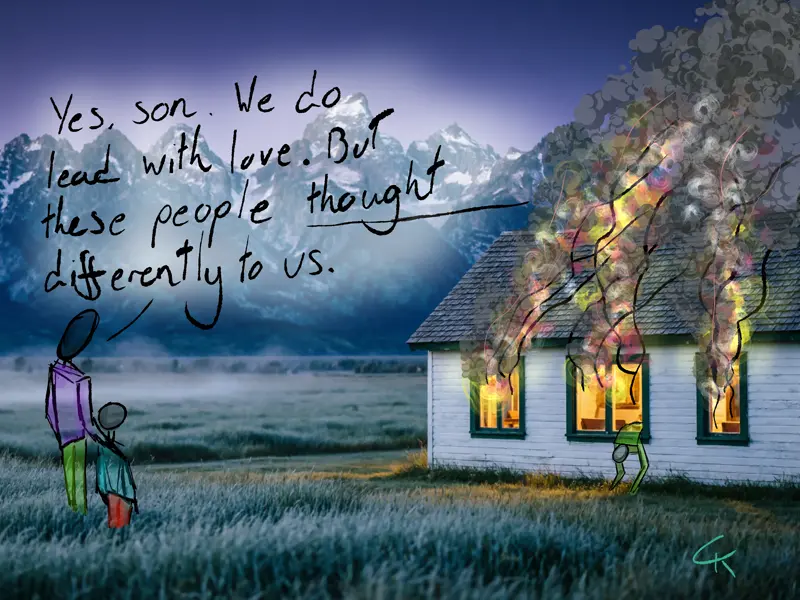
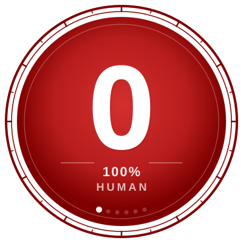

Audit #01: Neighborly
We build fences to define our peace, then complain about the silence. We want community but fear the intrusion. 'Neighborly' is the audit of that specific, suburban friction.
The Hypocrisy Audit
"Observations on the gap between what we say and what we do. Art that audits the human condition with clinical honesty."

We build fences to define our peace, then complain about the silence. We want community but fear the intrusion. 'Neighborly' is the audit of that specific, suburban friction.

Philosophy / Text Level 0 — The Soul